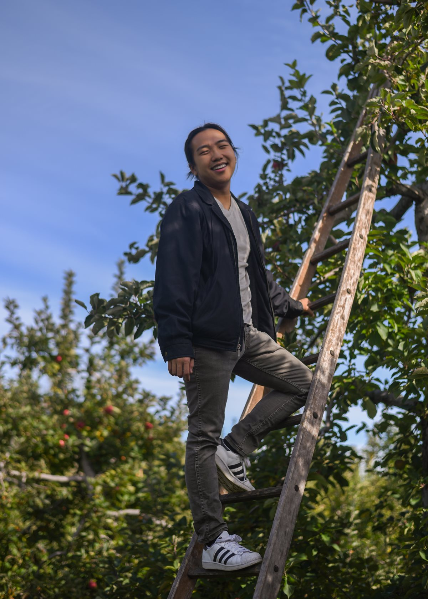

Thomas L. Chan
About

I hail from Wayland, a small town in Massachusetts. (There's actually a display server protocol named after it.) I went to the local high school and now attend Tufts University in Medford, MA.
I am a junior majoring in biology and computer science. I am interested in the intersections of human health and technology — namely computational biology, bio(medical)informatics, and translational informatics.
I am the member of oSTEM, an organization dedicated to LGBTQ+ individuals in the science, technology, engineering, and math community, and the co-president of Tufts Computer Science Exchange (CSX), which coordinates events for the coding community, such as the annual hackathon.
Outside of my computer science activities, I am part of First-Year Orientation Community Service (FOCUS), leading incoming university students in volunteer work before the academic year begins.
In my spare time, I practice digital photography and videography. Additionally, I enjoy reading feminist and critical race theory. You can find me drinking a London Fog with friends.